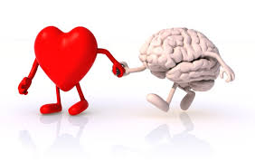

Nuestro Proyecto esta basado en las emociones y en las habilidades que tiene cada persona. En general, se identifican tres clases de habilidades: las sociales o interpersonales (como la comunicación asertiva o la empatía),las cognitivas (como la toma de decisiones o el pensamiento crítico) y las habilidades para el manejo de las emociones (como el estrés). Por eso este proyecto se va a basar en las tres clases de habilidades para los estuduantes, docentes y directivos de la Institucion Educativa Villa Flora, para que cada miembro sepa como se controla y maneja lo que siente.